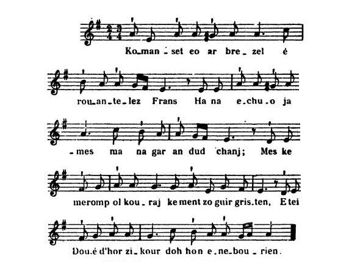
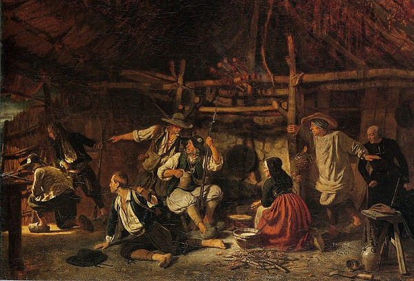

Komanset eo ar brezel
Les Bretons aux armes
The War has begun
Texte recueilli partiellement par La Villemarqué après 1840
puis par l'Abbé François Cadic (publication en mars 1911)

Mélodie
"Komanset eo ar brezel"
Gavotte: Mode hypodorien, rythme à 5 temps
Arrangement Christian Souchon (c) 2012
Source: "Chants de Chouans" de Le Diberder et Laurent, page 28
|
A propos de la mélodie Publiée dans "La Paroisse Bretonne" (mars 1911), puis dans "Chants de Chouans" d'Yves Le Diberder et Donatien Laurent (p.28, 1981), cette belle gavotte dans le mode hypodorien, présente dans la première version un rythme strict de marche 2/4. Chez Le Diberder, elle devient la mélodie à 5 temps notée ci-dessus, par allongement d'une demi-valeur (noire remplacée par noire pointée) des syllabes d'appui: brezel, Frañs, jamez, chañs, kouraj, gristen, zikour. Ce changement n'affecte pas la dernière syllabe d'"enebourien" (noire non pointée). Ce rythme est aussi insolite que celui de la "Marche d'Arthur" avec ses triolets de noires. A propos du texte La mise en ligne à fin novembre 2018 du carnet de collecte n°2 de La Villemarqué nous apprend qu'avant sa publication par l'Abbé Cadic en 1911, une grande partie de cette marche avait déjà été recueillie par La Villemarqué entre 1840 (commencement du Carnet N°2) et 1845 (seconde édition augmentée du Barzhaz). Ces éléments se répartissent ainsi - 4 strophes sans titre, page 24/32 et 25/33 (signalées en caractères gras) - Puis 12 strophes intitulées "Ar Chouaned" (Les Chouans), pages 84 à 86 (indiquées en italiques) dont 2 distiques et 1 quatrain, numérotés de (a) à (c) qui n'existent pas dans la version Cadic - La strophe 17 (Cadic) ou 17bis (La Villemarqué) sert d'introduction (strophe N°1) au chant Les Chouans du Barzhaz. Elle figurait déjà dans le carnet N°1 (strophe n). Date de composition S'il faut en croire la strophe 2, ligne 3, le chant aurait été composé la 9ème année de la tourmente, soit en 1798. F. Cadic s'en étonne: "Les chanteurs ne se piquaient pas d'une exactitude excessive en matière de chiffres et de dates". Cette strophe étonne dans un poème dont le contenu ne convient guère à une fin de révolte. Elle n'existe pas chez La Villemarqué, non plus que la strophe 14 dont une autre version nous aurait peut-être éclairés sur l'identité de ce Roclais à qui l'on veut faire restituer ce qu'il a dérobé. Cependant, la strophe 12 qui existe dans les deux versions, Cadic et La Villemarqué, et qui a trait sans doute au débarquement des Emigrés à Quiberon, indique que ce poème n'a pas été composé avant juin 1795. Cette datation est confirmée par la strophe 10 des deux versions qui fait allusion à la Bataille du Faouët, laquelle se déroula le 28 janvier 1795. Elle vit 150 Républicains repousser victorieusement une attaque contre cette ville gagnée à leur cause. Les 700 Chouans étaient conduits par trois chefs dont Jean Jan. Dans "Langonnet sous la Révolution" (p. 96) de Pierre-Yves Quémener, on apprend que "les activités de Le Paige surnommé De Bare [dont deux des "acolytes" étaient le fameux Bonaventure et son ami le barde-chouan Guillaume Le Guern dit "Sans-souci"] commencent à inquiéter la commissaire [local] au mois de juin 1797". Ce qui confirmerait que ce poème date bien de 1798. |
About the tune Published in "La Paroisse Bretonne" (March 1911), then in "Chants de Chouans" by Yves Le Diberder and Donatien Laurent (p.28, 1981), this beautiful gavotte in the Hypodorian Mode, features in the first version a strict 2/4 march beat. In Le Diberder's collection the tune comes as the above 5-beat melody, obtained by lengthening by a half value (quarter replaced by dotted quarter) the stressed syllables: brezel, Frañs, jamez, chañs, kouraj, gristen, zikour. This change does not apply to the last syllable of the last word "enebourien" (undotted quarter). This rhythm is as unusual as that of the "March of Arthur" with its triplets of quarter notes. About the lyrics Since the collecting book n° 2 of La Villemarqué was published, late in November 2018, we know that before it was printed by Father Cadic in 1911, a large part of this marching song had already been collected by La Villemarqué, between 1840 (beginning of copybook No. 2) and 1845 (second augmented edition of "Barzhaz"). These elements are distributed as follows: - 4 stanzas without title, page 24/32 and 25/33 (marked in bold type) - Then 12 stanzas titled "Ar Chouaned" (The Chouans), pages 84 to 86 (indicated in italics) 2 couplets and 1 quatrain of which, numbered from (a) to (c) do not exist in the Cadic version, - Stanza 17 (Cadic) or 17bis (The Villemarqué) serves as introduction (stanza No. 1) to the song Les Chouans in the Barzhaz. It was recorded in notebook N ° 1 (stanza n). Date of composition Judging from stanza 2, line 3, the song was composed in the 9th year of the Revolution, i.e. in 1798, which F. Cadic finds astonishing. He writes: "Singers did not praise excessive accuracy in terms of numbers and dates". This strange stanza in a poem whose content hardly suits the close of a revolt is missing in La Villemarqué's poem. So is stanza 14, another version of which might have enlightened us on the identity of the named Roclais who should be made to restore what he stole. However, the stanza 12 which exists in both Cadic and La Villemarqué versions, and probably relates to the landing of the Emigrants in Quiberon, allows us to date this poem from June 1795, at the earliest. This dating is confirmed by stanza 10 (existing in the two versions). It alludes to the Battle of Faouët, which took place on January 28, 1795, when 150 Republicans successfully repelled a Chouan attack against this city that adhered to their cause. The 700 Chouans of the rebel army were led by three chieftains including Jean Jan. In "Langonnet under the Revolution" (p.96) by Pierre-Yves Quémener, we learn that "the activities of Le Paige, dubbed De Bare [two of whose "confederates" were the famous Bonaventure and his friend the chouan bard Guillaume Le Guern, alias "Sans-souci"] began to worry the [local] commissioner as from June 1797 ". Which would corroborate that this poem was composed in 1798. |
1° Les Bretons aux Armes
Publié par François Cadic dans la "Paroisse Bretonne de Paris", mars 1911.Les strophes qui ont leurs équivalents dans le carnet 2 de Keransquer
sont soit en caractères gras (pp.24-25), soit en italiques (pp.84-86)
|
BREZHONEG (Stumm KLT) KOMANSET EO AR BREZEL 1. Komanset eo ar Brezel e rouantelez Frans Ha na echuo jamès, mar na gar an dud chanj; Mes kemeromp holl kouraj, kement zo gwir gristen, E tei Doue d'hor zikour doc'h hon enebourien. 2. Possubl e ve, labourer, e andurfec'h bepred Pep seurt gwal injurioù gand ar "sitoayened"? Honañ eo an nav vloaz zo emaoc'h-c'hwi tourmañtet Ma ne garit 'n em sikour, emaoc'h tud ruinet. 3. Klevet ho-peus lavaret e pevar korn ar vro Mar karit c'hwi 'n em sikour, Doué ho sikouro, Mar ret nemed murmuriñ barzh-en ho tiegezh Drouk 'pezo gant "n "Nasion", na gredit ket he dilez. 4. Na n'eus mui a azaouezh gwir doc'h lezenn Doue, Neb a bronoñs E anv zo sur da goll buhez, Ar sulioù zo difennet kerkoulz hag ar bedenn, An dud santel zo kuzhet, 'balamour zo kristen. 5. Ne-meus mui a zermonioù, vijil ha kofesion Holl emaint bet distrujet dré eurzh an Nasion, Ne glever nemed toued pep seurt komzoù lubrik Setu eno ar bedenn a ra ar Republik. 6. Ma teufe an Nasion da zont 'n ho tiegez E tefoc'h pront d'an Arme da vañjiñ ho tanvez. Na rit na min na seblant, evit gweled deviñ An imachoù, an traoù sakr demeurz ar grusifi. 7. Homañ eo ar bromesa ho-poa graet da Zoue Evit soutenn E lezenn e kollfec'h ho puhez Deuit eta, kozh ha yaouank da zoutenn al lezenn, Peotramañt tan an ifern ho tevo da viken. 8. Ar re a zo dimezet a gavo digarez Da lavared deuz familh, bugale ha grwagez Holl helloud o dilezel vit soutenn o ene, Doue o rekonpañso demeurz a gement-se. 9. Kemerit eta eksampl diwar paotred yaouank Pe-re a ya d'ar c'hombat gant un aer ken koutant 'N ur grial "Viv ar Roue! Viv ar Relijion!" Kreskiñ a ra o c'houraj pa dosta ar Nasion. 10. Mar garfe paotred Gourin, Gwiskriff ha Langonned Boud deuet de 'n em gombattiñ a-eneb ar Faouet E tefent a-benn an noz, peotramañt an deiz Da gas ar sitoayened houzout mar zo Doue. 11. War-benn un nebeut amzer vefot en henchoù Holl 'toned de ruiañ gand gwad ar paotred glas. C'hwi a welo sur-serten, e-barzh na vezo pell, Na vo ket ur sitoayen e-barzh holl Breizh-Izel. 12. Paroud etre ar mor bras na weler nemed bag Ganto en Emigreet deuet da zifenn o c'haoz, Vit kurunniñ ar Roue, kakaad war an aoter Ur beleg da oferenniñ en enor d'hor zalver. 13. Kouraj eta, Bretoned,c'hwi pezo an enor Da dad holl ar Fransizien da zigoriñ an nor, D'entreal barzh en e dron etre ma vo ar bed. Deuz an imposisionnoù a veot dilivret. 14. Pa soñje a nebeutañ ar Chouaned eus Breizh Atrapo immankamant ar sitoyen Rokleiz. Mar gellont hen atrapiñ, hen hag e zoudarded Ni roy dezho restituiñ ar pezh en-deus laeret. 15. Armé ar c'hatoliked a bed ar veleien Da bediñ mad evido, lavared an ofern, Ma reiñ Doue dezho ar gras da gounid ar viktor Ha da ganañ asamblet ar "Veni Creator". 16. Pa vo gounet ar viktor, e vezo permetet D'an hini a c'houlenno dougen ur chapeled Da heuliañ 'pad he vuhez ar gwir lezenn santel; Ar paour klañv en-devezo ur beleg kent mervel. 17. An dud kozh afflijet pe-re n'int-ket kapabl Evit dougen an armoù, da vonet d'ar gombat, A lavaro en ho zi , a-barzh mont da gousked Ur Pater hag un Ave evit ar Chouaned. 18. Ha c'hwi ta, merc'hed yaouank, pe-re n'int ket dimeet, Evit ober ho tever gortit c'hoazh un nebeut. Ta, Marc'harid, pasiantit, o ya, pasiantit mat, C'hwi no pezo Chouanted a vezo paotred vat. 19. Me soñje sur ha serten n'ho pezo ket da glemm Pa teuyo ar Brovidañs d'ho servij a uhellañ, Da roy d'eoc"h evit pried soudarded ar Roue O-deveuz skuilhet o gwad evit lezenn Doue. 20.Rag-se, ta, merc'hed yaouank, lakit en ho spered, N'oufec'h ket kavoud gwelloc'h evit ar Chouaned. Me soñj din sur ha serten o-deveus meritet Kavoud preferañs an holl war ar "sitoayenned". 21. Finisomp, paotred yaouank, finisomp ar chañson, O krial: "viv ar Roue!", Viv ar Relijion! Viv ar gristenien fidel! Ha viv ar veleien Pe-re n'o-deus ket touet eneb ar gwir Lezenn!" Transcrit KLT par Christian Souchon |
FRANCAIS LA GUERRE A COMMENCE 1. Les combats ont commencé au royaume de France. Ils ne s'achèveront qu'au retour de la balance. Mais gardons l'espoir toujours, Chrétiens, je vous le dis: Dieu vient à notre secours contre nos ennemis. 2. Vous faudra-t-il, paysans, endurer à jamais, De la part des citoyens injures et méfaits? Cela fait bientôt neuf ans que durent vos chagrins Demeurez les bras croisés et vous n'aurez plus rien. 3. Aux quatre coins du pays monte le cri que voilà: "Aidez-vous et à son tour, le Ciel vous aidera. Mais ne faire que gémir, claquemuré chez soi Contre l'indigne Nation ne la dérange pas." 4. La loi de Dieu n'a plus cours. L'invoquer est un tort. Prononcer même ce nom vous expose à la mort. Le dimanche est un jour comme un autre et la prière N'a plus cours et les chrétiens pour survivre se terrent. 5. Il n'y a plus de sermons, veilles, ni confessions, Ces pratiques sont honnies: ordre de la Nation. On n'entend plus que jurons et paroles lubriques, Qui tiennent lieu de prières sous la République! 6. S'il advient aux "Nationaux" d'entrer dans vos maisons, Vite, vous mandez l'Armée pour venger l'intrusion. Mais vous restez les deux pieds, dans le même sabot, Quand vous les voyez piller les biens sacerdotaux. 7. Telle était la promesse que vous fites à Dieu Soutenir Sa loi, sinon de périr être heureux. Venez donc, jeunes et vieux, et soutenez Sa loi Sachez, sinon, que l'enfer pour toujours vous échoit. 8. Les gens mariés prétexteront certainement Qu'ils ont une famille, une femme et des enfants. Tous ils pourront les laisser pour faire leur salut? Dieu le leur rendra ,c'est sûr, au centuple ou même plus. 9. Prenez donc exemple sur tous ces jeunes garçons Que l'on voit partir combattre en chantant des chansons, En criant "Vive le Roi! Vive la religion!" Dont le courage s'accroît quand approche la "Nation". 10. S'ils voulaient ceux de Gourin, Guiscriff et Langonnet S'en venir livrer bataille aux hommes du Faouët, Ils vaincraient en une nuit et un jour, sinon mieux, Et les "citoyens" sauraient alors s'il est un Dieu. 11. En peu de temps les chemins et routes en tous lieux Charrieraient dans les rigoles le sang de ces Bleus. Il n'y aurait en Basse Bretagne, croyez bien, Avant longtemps, plus un seul de ces maudits "citoyens". 12. Voyez comme les navires couvrent l'océan: Ce sont les émigrés qui reviennent à présent Défendre leurs droits, le Roi et remette à l'autel Un prêtre qui dise la messe et qui loue l'Eternel. 13. Courage, Bretons, c'est à vous que revient l'honneur D'ouvrir la porte au père des Français, quel bonheur! De lui rendre son trône jusqu'à la fin des temps; De nos délivrer enfin de ces impôts révoltants. 14. Quand on y pensera le moins les Chouans de Bretagne Prendront le citoyen Roclais, terreur des campagnes, Ils le saisiront, c'est sûr, avec tous ses soldats Ils devront restituer ce qui ne leur appartient pas. 15. L'Armée catholique veut que tous les prêtres prient A leur intention aux messes, vêpres et complies Que par la victoire Dieu couronne ses efforts, Qu'en Son honneur nous chantions le "Veni Creator". 16. La victoire permettra, parmi d'autres bienfaits, A qui le voudra, sur lui, d'avoir un chapelet, De régler sa vie sur les divins commandements, Aux malades de mourir munis des sacrements. 17. Les vielles gens affligées, ainsi que ceux qui n'ont Pas la force de porter l'épée réciteront Avant de se coucher un 'Pater' et un 'Ave' A l'intention des Chouans, dans le plus grand secret. 18. Jeunes filles, qui songez bientôt à vous marier, S'il est de votre devoir un jour de convoler, Attendez avec patience, Oh, Margot, patientez, Parmi les Chouans courageux, un jour vous choisirez. 19. Vous n'aurez pas à vous plaindre, j'en suis bien certain, Quand la Providence vous prodiguera ses soins, Vous offira pour maris tous ces soldats du roi Qui sacrifièrent leur sang pour la divine loi. 20. Jeunes filles, ainsi donc, mettez-vous dans l'esprit Qu'en épousant un Chouan, on est bien mieux loti. Ils méritent à coup sûr, et vous m'entendez bien, La préférence sur tous ces louches citoyens. 21. Jeunes gens, voici venue la fin de ma chanson Crions tous "Vive le Roi! Vive la religion!" Vivent les prêtres! vivent les chrétiens méritants! Qui contre l'antique Loi n'ont pas prêté serment! Traduction Christian Souchon (c) 2012 |
ENGLISH THE WAR HAS BEGUN 1. Now the war has broken out throughout the realm of France And shall not come to an end, unless our people change. But let us all take fresh heart. Our Christian faith is true God will come to our rescue. We shall conquer our foe. 2. Could it be, say, labourers, that you forever more Suffer should all sorts of snubs from the Babylon's whore? For nine years now they have plagued you as much as they could If to help it you don't try, you'll be weaned off your goods. 3. You heard it whispered all everywhere in our land: If you want to aid yourself, God's sure to lend a hand. But if you do nothing but snivel, shut up at home, Harassing your land the Nation will go on to roam. 4. Reverence nowhere is sincerely paid to God's Laws If you but pronounce His name, you get into their claws. Sunday mass is banned as are the prayers of all sorts. Priests must hide. Their pious exertions the Nation thwarts. 5. There are no more sermon or vigil or confession. All pious exercises are banned by the Nation. Everywhere you hear them curse, you hear their troopers swear Since we have a Republic, that's the new kind of prayer. 6. Whenever the Nation's soldiers into your house come You call on our lads that out of it they might them drum. But a finger you don't raise, when you see them burn down Statues, holy vessels or church crosses in your town. 7. This is the promise you made to God in times gone by: That you would defend His Law, that you would do or die, Now the time have come to be as good, aye, as your word Or flames and fire of Hell are the punishment incurred. 8. Married people, I dont doubt, have an excuse ready They will protest that they have wife, child and family. But all of them who will choose to leave will save their souls: God bestows a reward on anyone who enrols. 9. Therefore as a model you should take all those young boys: See how marching to the fighting each of them enjoys. And they cry "Long live the King! And long live the old Creed!" And get bolder, as against the "Nation" they proceed. 10. If those of Gourin, Guiscriff and Langonnet decide Against those of Le Faouet town to pack up and stride, They'll conquer them in a night, in a night and a day To show them that God exists, kill them: that's the best way! 11. In a no-time all the roads and highways of our lands They will overflow with Bluecoats' blood spilt by our hands And before long you will be able to ascertain That Low-Brittany has been ridded of all "Citoyens". 12. Everywhere upon the main now vessels are in sight With their load of émigrés come to defend their rights, To seat the King on the throne and to restore our Faith, To have priests to praise the Father, Son and Holy Wraith. 13. Courage, Bretons, you will have the distinguished honour Of ushering in the King, who's to all French father, Of giving him back his Crown to reign until doomsday, Of freeing us of the taxes that on us they lay. 14. When nobody expects it, the Chouans of Brittany For sure get hold of Rocleis, the public enemy, If we can get hold of him and of his armed men We will make them restore all the things stolen by them. 15. Requested are by the Catholic Army all priests, To pray to God for them in Masses and Holy feasts, That He may grant them their prayer and make them the victor In His honour we shal sing the "Veni Creator"! 16. We all will be allowed once we gain the victory, If we choose it, to carry with us a rosary, The dying who want a priest will no more in vain search. They will die fortified with the last rites of the Church. 17. Lasses, elderly men, children and each feeble wight And all such weak folks as cannot take part in the fight, Shall in their homes stay and call before they go to bed The blessing of God with a 'Pater' on the Chouans' head. 18. And you, young girls, lend an ear, who are not wedded yet, It's your duty to wed, still you should wait till you get A decent match, be patient, Maggie, it's still stormy. With the peace the Chouans will come back from the Army. 19. You shall not have to complain, that's a thing I don't doubt, Providence can arrange it. Nothing to worry about. All the "Soldiers of the King" a good match can afford Who shed their blood to enforce the Law of God our Lord. 20. Young girls, do remember well and always bear in mind: Better husbands there are none than Chouans of any kind They should be, and by all means, preferred to the shady And dubious "Citoyens" of the "Nation"'s army. 21. Now, young people, I have come to the end of my song! Let us cry "Long live the King!" "Long live the Religion!" "Long live the non-juring priests and the faithful Christians Who shuned swearing allegiance to the lawless Nation!" Translation: Christian Souchon (c) 2012 |
2° Setu bremañ ar brezel
Texte recueilli par La Villemarqué dans le 2ème Carnet de Keransquer pages 24-25Les N° de strophes+vers correspondent à la version collectée par l'Abbé Cadic
|
BREZHONEG (Stumm KLT) SETU BREMAÑ AR BREZEL Page 24/32 "Bonavantur, mort à Châteaulin en 1816" 1. Setu bremañ ar brezel e rouantelezh Frans, Na fiñvezo biken, mar na gav an dud chañs, Rak-se kemeromp kouraj, kement a zo kristen, Pedomp Doue d’hor sikour enep hon enebourien. 2.1 Possubl a ve, labourer e gouzañvfec'h bepred, A bep sort drouk prezegoù gant ar “sitoyaned”. 3.3 Na rit nemet gourdrouziñ e-barzh ho tiegezh, Drouk ho-po deus an Nasion, ma na gredit o dilez. Page 25/33 4.1 Na n’eus mui an azaouezh gwir doc’h lezenn Doué Neb a laro E anv zo sur da goll e vuhez. 5.3 Na n’eus nemet ledouet ha bep sort konzoù lik Setu eno ar pedennoù a ra ar Republik. 5.1 Na n’eus mui a prezegoù, vigil na kovesion. Rag holl emaint distrujet dre urzh an Nasion, 6.3 Na rit na man na seblant, evit gwelet deviñ Ann imajoù, ann traoù sakr, memez ar gwisifi. Transcrit KLT par Christian Souchon |
FRANCAIS C'EST MAINTENANT LA GUERRE Page 24/32 "Bonavantur, mort à Châteaulin en 1816" 1. Voici maintenant la guerre au royaume de France Qui ne s’arrêtera jamais si les gens de changent pas. Que tous les chrétiens prennent donc courage, Prions Dieu de nous secourir contre nos ennemis. 2.1 Serait-il possible, laboureur, que vous souffriez toujours Toutes sortes de mauvais prêches de la part des citoyens. 3.3 Vous ne faites que tempêter dans vos maisons, Vous serez malmenés par la nation si vous n’osez pas en sortir. Page 25/33 4.1 Il n’y a plus parmi nous de droit et de loi de Dieu Celui qui dira son nom est sûr de perdre la vie. 5.3 Il n’y a plus que blasphèmes et toutes sortes de paroles libres. Telles sont les prières que fait la République. 5.1 Il n’y a plus de prêche, de vigile ni de confession Car tout a été détruit par ordre de la nation. 6.3 Vous ne faites plus attention lorsque vous voyez brûler Les statues, les choses sacrées et même le crucifix. Traduction proposée par le site en ligne |
ENGLISH NOW A WAR HAS BROCKEN OUT Page 24/32 "Bonavantur, died in Châteaulin in 1816" 1. Now a war has broken out in the kingdom of France Which will not come to an end, if people do not change. . May all Christians take courage, all Christians take courage! Let's pray God He may help us against our enemies! 2.1 Plowman, tell me, how could you, suffer any longer All sorts of bad preaching on the part of "Citizens"? 3.3 How can you stay shut away all day in your houses. You'll be misused by the "Nation" if you daren't leave them. Page 25/33 4.1 There's no longer, among us, human right or God's Law Pronounce the name of God and you're sure to lose your life. 5.3 All you hear is blasphemy or free speech of all kind, The sorts of prayers the Republic everywhere spreads. 5.1 No more preaching, religious feasts and no confession All that was destroyed by order of the new "Nation". 6.3 But you look elsewhere when are, all around you, aflame Statues, and the sacred things, even the holy Cross. Translation:"Google Translate" |
3° Chouaned, faite par Sans-souci
Texte recueilli par La Villemarqué dans le 2ème Carnet de Keransquer, pages 84-86Les N° de strophes+vers correspondent à la version collectée par l'Abbé Cadic
Les strophes (a) à (c), relatives au débauchage de soldats de la République n'existent pas dans la version Cadic.
|
BREZHONEG (Stumm KLT) AR CHOUANED Page 84/43 "Faite par Sans-souci" 1. Disklaeriet eo ar brezel e bro a Vreizh izel, Ha na zaleo morse mar na gav an dud chañs. Rag se kemeromp kalon, kement a zo Kristen, Erru Doue d'hor sikour rag hon enebourien. Falla douar gwella ed. Falla dud, gwella dimet ; 4.3 An iliz so difennet kenkoulz hag ar bedenn An dud santel zo kuzhet balamour m' int kristen; (a) Arsa-ta ma mignonet, pa 'z eomp en em gavet, Bremañ rekomp-ni emgann, pe a-hend-all redek (b) Prestit-c’hwi deomp hoc’h armoù, ho poultr hag ho sabrenn Me ho kaso d'ar pennoù, ha n’ho-po ket awen. Pa vefet erru gante c’hwii hallo lavaret : -Ni a zo potred iaouank o klask ar chouaned. (c) Ni a zo paotred yaouank, hag a zo gwallgaset, Hag a zo bet lakaet, siwazh da 'vont da soudarded. 10. Ma garfé parrez Gwiskriff, Gourin, ha Langonet, Dont den'em sevel raktal, a-eneb ar Faouet, Ni c'honefé, a dra sur, é noz pé en un dé Ni gasfemp ar paotred glas d' c'hout hag-eñ zo Doué ; 12. Me 'well erru eus barr Saozon, bordik ar mor glaz, Un arme à Vretoned, prest da ziskenn e breizhat traez. Evit troniñ ar Roué; lakaat war bep aoter, Beleien ha merenniñ en enor d'hor Salver. Page 85 / 44 17. Tud kozh, ha ré divanket, hag ar paotred bihan, Evit balé an henchou, evit mont d'an emgann, a laro n’ o seitegezh, abarzh mont da gousket, Paterioù hag Avéoù evit ar Chouaned. 8. Ar ré a zo dimezet a gavo digarez Da laret o-deuz kerent, gwregez ha bugale Koulskoudé mar karfent soñjal, vez gwell dezhe al lezenn, Evit monet d'an arme da soutenn ar brezel? 9. Mar karfec'h kemer kentel, war ar baotred yaouank Peré a ya d'an emgann, gant un dremm ken laouen, En ur ganañ, en dro ” Bevet ar religion! „ Kreskiñ a ra va nerzh, tannañ ra va c'halon – 6. Ma zeufé an Dud glaz, da zeviñ ho tieghez C'hwi yefé trumm d'an armé da zouten ho tañvez, Bremañ na rit mann ebet evit gwelout deviñ, Ar skeudoù hag an traoù sakr, koulz hag ar grusifi. 11. Ne vo ket pell heb dalé 'vo gwellt an henchoù braz An henchoù braz e ruilhoù gant gwad ar Baotred c'hlaz, Neuze vo gwelet ober c'hoari tro ar vodenn, E planta kartachourien e lost ré al lezenn Page 86 17bis. Pa veo achu ar brezel e vezo diskleriet D‘an neb en-deuz bolontez, da zougen chapelet, Da lar‘d en o zieghez, abarzh mont da gousket. Paterioù hag Aveoù evit ar Chouaned. [1] [2] [3] [4] Mention rayée: "Disoursi" Transcrit KLT par Christian Souchon |
FRANCAIS LES CHOUANS Page 84/43 "Faite par Sans-souci" 1. En Basse-Bretagne donc, la guerre est déclarée Nous espérons qu’elle sera de courte durée Car il convient d’espérer, Chrétiens, je vous le dis: Dieu vient à notre secours contre nos ennemis. A la pire terre le meilleur blé ; Aux pires gens le meilleur mariage 4.3 Le saint culte est prohibé, comme l’est la prière Les prêtres et les chrétiens pour survivre se terrent. (a) Il ne faut point, amis, à nous-mêmes nous mentir Désormais nous ne pouvons que combattre ou bien fuir (b) Prêtez-nous vos armes, votre poudre et votre sabre Je vous conduirai vers nos chefs qui sont francs et affables Lorsque vous serez près d’eux, déclarez fièrement : Nous sommes des jeunes gens qui voulons être Chouans! (c) Nous sommes des jeunes gens abusés et l’on a, A notre corps défendant, fait de nous des soldats 10. S'ils voulaient ceux de Gourin, Guiscriff et Langonnet S'en venir livrer bataille aux hommes du Faouët, Nous vaincrions en une nuit et un jour, sinon mieux, Et nous enverrions les « Bleus » savoir s'il est un Dieu. 12. Voyez venue d’Angleterre sur l’océan bleu Une armée de Bretons prêts à revenir chez eux Restituer son trône au Roi et remette à l'autel Un prêtre et communier avec le pain du Ciel. Page 85 / 44 17. Les vielles gens, les infirmes ainsi que les enfants Trop faibles pour le combat ou pour marcher longtemps Avant de se coucher qu’ils disent leur chapelet A l'intention des Chouans un 'Pater' et un 'Ave' ! 8. Les gens mariés prétexteront certainement Qu'ils ont une famille, une femme et des enfants. Mais s’ils voulaient réfléchir, aiment-ils mieux la Loi Que de combattre à l’armée [pour le droit et la Foi] ? 9. Prenez donc exemple sur tous ces jeunes garçons Que l'on voit partir combattre en chantant des chansons, En criant "Vive le Roi! Vive la religion!" Et mon courage s'accroît et mon cœur fait des bonds.. 6. S'il advient aux "Nationaux" d'entrer dans vos maisons, Vite, vous mandez l'Armée pour venger l'intrusion. Mais vous restez les deux pieds, dans le même sabot, Quand vous les voyez piller les biens sacerdotaux. 11. En peu de temps les chemins et routes en tous lieux Charrieront dans les rigoles le sang de ces Bleus. On verra jouer au jeu du « tour du buisson » ma foi Des gens plantant des catouches au cul des gens de loi. Page 86/45 17bis Quand la guerre sera finie on expliquera A quiconque veut porter un chapelet sur soi Comment dire en sa maison avant de se coucher A l’intention des Chouans des Paters, des Avés. [1] [2] [3] [4] Mention rayée: "Sans-Souci" Traduction Christian Souchon (c) 2019 |
ENGLISH THE CHOUANS Page 84/43 "Made by Sans-souci" 1. Now the war has broken out throughout the realm of France And shall not come to an end, unless our people change. So let us all take fresh heart! Our Christian faith is true: God will come to our rescue. We shall conquer the foe! To the worst soil the best wheat, To the worst people the best wedding! 4.3. Sunday mass is banned, as are the prayers of all sorts. Priests must hide, their pious exertions the Nation thwarts. (a) Now there is no use my friends that to ourselves we lied: We can only, from now on, either flee away or fight. (b) Give us all your guns, give us your powder and your swords! To our leaders I'll take you, They're frank in acts and words As soon as you are near them, you should proudly declare: We are young and want to take part in the Chouan warfare! (c) We are misled young folks who against our own will were Made to serve a godless cause, its uniform to wear. 10. If those of Gourin, Guiscriff and Langonnet decide Against those of Le Faouet town to pack up and stride, They'll conquer them in a night, in a night and a day! To show them that God exists, kill them: that's the best way! 12. Everywhere upon the main, now vessels are in sight With their load of émigrés come to defend their rights, To seat the King on the throne and to restore our faith And the priests to praise the Father, Son and Holy Wraith. Page 85/44 17. Lasses, elderly men, children and each feeble wight And all such weak folks as cannot take part in the fight, Shall in their homes stay and call before they go to bed The blessing of God with a 'Pater' on the Chouans' head. 8. Married people, I dont doubt, have an excuse ready They will protest that they have wife, child and family. But all of them who will choose to leave will save their souls: God bestows reward on anyone who will enrol. 9. Therefore as a model you should take all those young boys: See how marching to the fighting each of them enjoys! And they cry "Long live the King! And long live the old Creed!" They get bolder, as against their hordes they proceed. 6. Whenever the Nation's soldiers into your house come You call on our lads that out of it we might them drum. But a finger you don't raise when you see them burn down Statues, holy vessels and church crosses in your town. 11. In a no-time all the roads and highways of our lands They will overflow with Bluecoats' blood spilt by our hands We will see, playing the game called "Around the bush farce" People planting with buckshot many a lawman's arse. Page 86/45 17 bis. When the war is over it will be explained clearly To whoever accepts to carry a rosary How to pray it and to call before going to bed The blessing of God with a 'Pater on the Chouans' head. [1] [2] [3] [4] Mention rayée: "Carefree" Translation:"Google Translate" |
NOTES:
|
[1] Les prêtres bardes: La présentation de ce chant par l'abbé Cadic débute ainsi: "Au moment où la chouannerie mit les armes aux mains d'un si grand nombre de Bretons résolus à défendre leurs croyances chrétiennes et leurs prêtres contre les lois tyranniques de la Révolution, il se rencontra parmi eux beaucoup de bardes dont les chants héroïques les entrainèrent aux combats. De ces Tyrtée... quelques œuvres ont survécu, trop peu malheureusement...La plupart naquirent en cette terre de Vannes où l'insurrection marqua plus qu'ailleurs son empreinte. En voici une pourtant qui vient de Cornouaille. Nous la devons à...M. l'abbé Le May, recteur de Saint-Aignan. Aux détails qu'elle rapporte, il est facile de voir qu'elle dut être composée dans la région de Guiscriff et Gourin. Par qui? ... L'auteur a jugé à propos de garder l'anonymat." Puis il suggère qu'il pourrait s'agir de Guillou Arvern de Gourin auquel La Villemarqué attribue les chants du Barzhaz des "Bleus" et des "Chouans", cet "ancien séminariste que la Révolution avait jeté dans les camps" et dont la vocation première se "sent à l'inspiration et au tour d'esprit de ses chansons". Or le chant ci-dessus est à l'évidence l'œuvre d'un clerc et, comme on l'a dit en introduction, la strophe 17 rappelle presque mot pour mot le premier couplet de la "chanson des Chouans". Cette présentation appelle quelques remarques: [2] Les prêtres collecteurs Si avec plus d'une quinzaine de pièces La Villemarqué se range parmi les plus anciens et les plus efficaces collecteurs de chants de Chouans, on est frappé de trouver parmi ses successeurs un grand nombre d'ecclésiastiques. Outre l'Abbé François Cadic, il faut mentionner l’Abbé Alain Durand, l’auteur de « Ar Feiz hag ar Vro » (Religion et patrie) paru en 1847 à Vannes et dédié à La Villemarqué, qui voyait en son livre un « Barzhaz » de la période 1789-1814 destiné aux jeunes gens; Lan Inisan,un prêtre du Léon auteur d’"Emgann Kergidu" paru en 1877 et l'Abbé Mathurin Buléon de Plumergat. L'abbé François Cadic (1864-1929) lorsqu'il créa sa "Paroisse Bretonne de Paris" disposait d'un réseau de prêtres parfaitement au fait des traditions populaires: : les abbés Davalan, Larboulette, Le Bayon, Le Garff, Le May, Le Moing, Le Roch, ainsi que son cousin, l’abbé François-Mathurin Cadic et l’abbé Guilloux, tous d’origine paysanne et dont les familles avaient souvent été impliquées dans la Chouannerie. Les ancêtres de François Cadic avaient combattu dans les deux camps. [3] Anticléricalisme et mémoire chouanne Mais bien plus que la généalogie, ce sont les problèmes socio-politiques propres au début du XXème siècle qui expliquent que le clergé soit aussi bien représenté dans cet effort de mémoire et de collectage. Il s'agit des tensions qui devaient conduire à l'arrivée au pouvoir du Bloc des Gauches en 1902 et à la loi du 9 décembre 1905 qui marque l'apogée de l'anticléricalisme sous le gouvernement d'Emile Combes avec la lutte contre les congrégations et la séparation de l'Eglise et de l'Etat. L'abbé Cadic inaugura (dans sa "Paroisse") une série d’articles intitulée «Histoire populaire de la Chouannerie» début 1908, suivie d’articles sur les chants de Chouans à partir de 1911, alors qu'en Bretagne se déchaînait la "Querelle des inventaires" des biens de l'Eglise en 1906. Cette opposition politique par chants à caractère clérical interposés atteint un sommet avec un recueil de chants tirés de manuscrits anciens publiés entre 1934 et 1937 par le chanoine Henri Pérennès avec le concours de l’abbé Jean-Marie Perrot. Ce dernier s'était fait connaître en lançant un concours dans la presse catholique en vue de créer un « Barzaz Bro-Leon », version léonaise du Barzhaz- Breizh, au moment précis où la loi du 9 décembre 1905 entrait en vigueur. La diffusion du recueil du chanoine Pérennès fut largement entravée par le Cartel des Gauches (1932) et le Front Populaire (1936). En Vendée Militaire qui connut les mêmes événements, mais où le genre musical de la "gwerz" n'existe pas ou peu, le travail mémoriel s'est reporté sur des monuments tangibles érigés par la Troisième République: des calvaires, des vitraux et des statues ornant les églises [4] La constitution civile du clergé L'essentiel des doléances exprimées dans ce chant a trait aux conséquences de la constitution civile du clergé qui transforma en dictature la révolution démocratique inaugurée en 1789. Il n'est peut-être pas superflu de rappeler de quoi il s'agit: Selon ces mesures "gallicanes" l'Etat prend en charge l'organisation des religions, tandis que la loi de 1905 visée ci-dessus obéit au principe de séparation des Eglises et de l'Etat, selon lequel ce dernier ne s'occupe pas d'affaires religieuses. |
[1] The bard priests: The presentation of this song by the Rev. Cadic begins as follows: "Soon after the Chouan movement had put arms in the hands of so many Bretons anxious to defend their Christian faith and their priests against the oppressive laws of the Revolution, there arose among them many bards, whose heroic songs incited them to fight. From those Tyrtaei ... some works have survived, too little works unfortunately ... Most of these poets were natives of the Vannes area, where the uprising was more popular than anywhere else. But here is a song from Cornouaille (in Quimper dialect) which we owe to Rev. Le May, Vicar of Saint-Aignan. From the details it contains we may easily infer that it was composed in the neighbouring of Guiscriff and Gourin. By whom? ... The author has chosen to remain anonymous." Then F. Cadic suggests that it could be Guillou Arvern from Gourin to whom Villemarqué ascribes the Barzhaz songs "The Blue coats" and "The Chouans", a "former seminarist whom the Revolution had forced to become a warrior" and whose primary vocation is "evident from the inspiration and the basic cast of mind underlying his songs". Now the song at hand is obviously a cleric's work and, as stated in the above introduction, stanza 17 is almost literally identical with the first verse of the "Song of the Chouans". A few remarks to this statement: [2] The collector priests If, with a score of collected items, La Villemarqué ranks among the first and most successful collectors of Chouan songs, one is struck to find among his successors a large number of clergymen. In addition to Rev. François Cadic, we may mention Rev. Alain Durand, the author of "Ar Feiz hag ar Vro" (Faith and Fatherland) published in 1847 in Vannes and dedicated to La Villemarqué, as a "Barzhaz" for the period 1789-1814, intented for young people; Lan Inisan, a priest from the Brest area, author of "Emgann Kergidu" published in 1877, and Rev. Mathurin Buléon from Plumergat. The Rev. François Cadic (1864-1929) when he created his "Breton Parish in Paris" availed himself of a network of priests thoroughly aware of popular lore: the Rev. Davalan, Larboulette, Le Bayon, Le Garff, Le May, Le Moing, Le Roch, as well as his cousin, Rev. Francois Mathurin Cadic and Rev. Guilloux. All of them were of peasant stock, and their ancestry was involved in Chouan warfare. The ancestors of François Cadic had fought on both sides. [3] Anticlericalism and Chouan memories But, much more than genealogy, socio-political issues in early twentieth century France explain why there were so many clergymen among the collector-revivalists of Chouan lore. Back then, political tensions resulted in the arrival in power of the ultra-Republican "Bloc des Gauches" in 1902 and the Law of December 9, 1905 passed by Emile Combes' government marked the zenith of anti-clerical trends in the country. The law aimed at curtailing the power of religious Congregations and secularization of the Church's properties, under the principle of Separation of Church and State. Rev Cadic inaugurated (in his "Breton Parish in Paris") a series of articles entitled "Popular history of the 'Chouannerie'", early in 1908, followed, as from 1911, by articles on the Chouan songs, while in Brittany the "Quarrel of the inventories" (of the Church properties) had been raging more and more since 1906. This political opposition by means of songs with clerical import reached a summit, when a collection of old handwritten songs was published between 1934 and 1937 by Canon Henri Pérennès, with the assistance of Rev. Jean-Marie Perrot. The latter had made himself known by organizing a contest within the Catholic press to create a "Barzaz Bro-Leon", a Leonese version of Barzhaz-Breizh, at the very moment when the Law of December 1905 came into force. The publication of Canon Pérennès' collection was largely hindered by the coalitions of left wing parties known as "Cartel des Gauches" (1932) and "Front populaire' (1936). In "Vendée Militaire" where the same events as in Brittany had occurred, but where the musical genre of the "gwerz" did not exist, collective memory was vested in tangible monuments erected by the Third Republic: wayside crucifixes, stained glass windows and statues. [4] The Civil Constitution of the Clergy Most of the grievances expressed in this song are the consequences of the Civil Constitution of the Clergy which caused the democratic revolution initiated in 1789 to evolve into a dictaorship. It is perhaps not superfluous to recall what it was: Pursuant to these "Gallican measures", the government took charge of the organization of religions, whereas the aforementioned "Law of 1905" would obey the principle of "Separation of the Churches and the State", according to which the latter does not interfere in religious affairs. |

"Chouans" de Charles Fortin (1815-1865)
Chant des chouans
Retour à "Ar re c'hlaz"
Taolenn
"Les Chouans selon Villemarqué", un livre au format A4.  Cliquer sur le lien ou sur l'image ci-dessus |